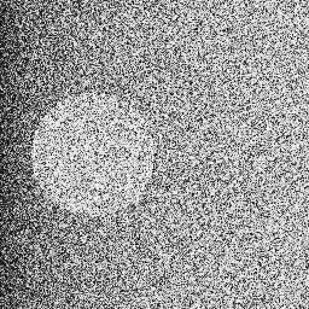

Logan W.
19 (pins.json) commits pinned · GitHub snapshot 2026-09-29 (sources/
I'm Logan. I have worked as a carpenter since I was fifteen, and I have no formal training in computing. AI agents have written essentially all of the code in these projects; gates decide what is true, and the record keeps what they said. (stated by Logan, 2026-09-29)
IWhere each project came from
- grew into
- spun out
- underlies
- hosts a port of
- verifies
- was distilled into
- documents
- public
- private for now
- a family, first to last created
The file behind each arrow, and behind each position
- PrettyCloud grew into atlas-darkroom: A print engine for the Atlas of Mathematical Forms (atlas-darkroom c1b9b6e README.md:3, private for now)
- PrettyCloud grew into atlas-engine: Sixty-eight plates in PrettyCloud (atlas-engine 867c57a README.md:8)
- atlas-engine grew into cft-fp256: The workload this tile exists to serve is atlas-engine (cft-fp256 77b8440 README.md:421)
- atlas-engine verifies cft-fp256: A GPU agrees, bit for bit, on a real workload (cft-fp256 77b8440 README.md:232)
- atlas-engine underlies atlas-darkroom: presentation from PrettyCloud, shape from atlas-engine (atlas-darkroom c1b9b6e README.md:282, private for now)
- atlas-darkroom spun out atlas-optical: Extracted whole from atlas-darkroom on 2026-08-28 (atlas-optical dbccafe README.md:5, private for now)
- atlas-darkroom spun out atlas-film: Born 2026-08-28 by extraction from the darkroom's develop monolith (atlas-film be1d674 README.md:135)
- cft-fp256 underlies cft-rebound: REBOUND's IAS15 integrator with its arithmetic routed through libcft (cft-rebound 039e3c3 README.md:3)
- cft-fp256 underlies Quantum-Film: path = vendor/cft-fp256 (Quantum-Film a7f02db .gitmodules:2)
- atlas-film underlies Quantum-Film: path = vendor/atlas-film (Quantum-Film a7f02db .gitmodules:5)
- cft-fp256 hosts a port of atlas-film: P2 moves atlas-film (ParcelRound 8767e23 CASE-STUDY-4.md:28)
- cft-rebound was distilled into ParcelRound: lifted into a standalone repository (cft-rebound 039e3c3 docs/
PARCEL-ROUNDS.md:13) - cft-fp256 was distilled into HonestFramework: §1 bit-identity authority, §2 refusal, §3 the gates, §4 single-sourcing, §6 artifact manifests (HonestFramework 65447fd CASE-STUDY.md:18)
- Mercenaries2 grew into Merc2-Mods-Exp: For the mods developed during this phase of the project, visit [Merc2-Mods-Exp] (Mercenaries2 e51dcbe README.md:5)
- atlas-darkroom spun out StoryDocs: taken out of atlas-darkroom (StoryDocs 673148c README.md:8, private for now)
- StoryDocs documents atlas-engine: projects/atlas-engine (StoryDocs 673148c, private for now)
- StoryDocs documents atlas-film: projects/atlas-film (StoryDocs 673148c, private for now)
- StoryDocs documents atlas-optical: projects/atlas-optical (StoryDocs 673148c, private for now)
- StoryDocs documents cft-fp256: projects/cft-fp256 (StoryDocs 673148c, private for now)
- StoryDocs documents HonestFramework: HonestFramework and ParcelRound (StoryDocs 673148c projects/
method/ README.md:3, private for now) - StoryDocs documents ParcelRound: HonestFramework and ParcelRound (StoryDocs 673148c projects/
method/ README.md:3, private for now) - StoryDocs documents PrettyCloud: projects/prettycloud (StoryDocs 673148c, private for now)
- StoryDocs documents Quantum-Film: projects/quantum-film (StoryDocs 673148c, private for now)
Positions, earliest first:
- CanonBracketTool: 2025-11-04 (GitHub snapshot 2026-09-29)
- Microscope-Stacker: 2025-11-06 (GitHub snapshot 2026-09-29)
- Mercenaries2: 2026-06-27 (Mercenaries2 e51dcbe git log)
- Merc2-Mods-Exp: 2026-06-29 (Merc2-Mods-Exp 0ec1db2 git log)
- PrettyCloud: 2026-07-15 (PrettyCloud 5161daa git log)
- atlas-darkroom: 2026-07-27 (atlas-darkroom c1b9b6e git log, private for now)
- atlas-engine: 2026-08-22 (atlas-engine 867c57a git log)
- atlas-film: 2026-08-28 (atlas-film be1d674 README.md:135)
- atlas-optical: 2026-08-28 (atlas-optical dbccafe README.md:6, private for now)
- cft-fp256: 2026-08-28 (cft-fp256 77b8440 git log)
- cft-rebound: 2026-09-09 (cft-rebound 039e3c3 git log)
- ParcelRound: 2026-09-11 (ParcelRound 8767e23 git log)
- HonestFramework: 2026-09-12 (HonestFramework 65447fd git log)
- binary-sites: 2026-09-14 (binary-sites dacdcb8 git log, private for now)
- StoryDocs: 2026-09-20 (StoryDocs 673148c git log, private for now)
- nextpnr-xilinx: 2026-09-23 (GitHub snapshot 2026-09-29: created (a fork - dated by GitHub's record of when the fork itself was made, in UTC, never by a commit, since its earliest commit belongs to the project it forked))
- Quantum-Film: 2026-09-25 (Quantum-Film a7f02db git log)
Families:
- 22 (GitHub snapshot 2026-09-29) mercs2 repositories, created 06-29 to 07-25 (GitHub snapshot 2026-09-29)
The rest of what the drawing marks:
- the line marked "snapshot": 2026-09-29 (sources/
github-2026-09-29-1621.json) - atlas-darkroom: private (GitHub snapshot 2026-09-29, private for now)
- atlas-optical: private (GitHub snapshot 2026-09-29, private for now)
- binary-sites: private (GitHub snapshot 2026-09-29, private for now)
- StoryDocs: private (GitHub snapshot 2026-09-29, private for now)
- Mercenaries2: server refesl.live (Mercenaries2 e51dcbe README.md:145)
IILedger
| project | what it is | state | last verified | agent-credited | check it |
|---|---|---|---|---|---|
| Determinism | |||||
| PrettyCloud | A WebGL2 point-cloud atlas (PrettyCloud 5161daa README.md:3) | served at prettycloud.io (PrettyCloud 5161daa README.md:12) | — (PrettyCloud 5161daa) | 33/39 (PrettyCloud 5161daa git log) | open it |
| atlas-engine | A language for platonography (atlas-engine 867c57a README.md:3) | Sixty-eight of sixty-eight, one hash (atlas-engine 867c57a README.md:176) | 2026-09-18 (GitHub snapshot 2026-09-29) | 70/84 (atlas-engine 867c57a git log) | cft-fp256's photograph stage, a minute and a half (cft-fp256 77b8440 README.md:239) |
| cft-fp256 | A math coprocessor that gets the same answer everywhere (cft-fp256 77b8440 README.md:3) | ABI 0.15 (cft-fp256 77b8440 host/ | 2026-09-29 (GitHub snapshot 2026-09-29) | 1030/1079 (cft-fp256 77b8440 git log) | make verify-quick, ~20 min, 28 of 41 stages (cft-fp256 77b8440 CLAUDE.md:9) |
| cft-rebound | REBOUND's IAS15 integrator with its arithmetic routed through libcft (cft-rebound 039e3c3 README.md:3) | At binary64 it is REBOUND's own IAS15 bit for bit (cft-rebound 039e3c3 README.md:22) | 2026-09-14 (cft-rebound 039e3c3 docs/ | 130/136 (cft-rebound 039e3c3 git log) | make check-quick, 5-second warm (cft-fp256 77b8440 CLAUDE.md:26) |
| binary-sites | Four sites, one per IEEE 754 binary interchange format (binary-sites dacdcb8 README.md:5, private for now) | private (GitHub snapshot 2026-09-29, private for now) for now; binary32.com · binary64.com · binary128.com · binary256.com (binary-sites dacdcb8 README.md:3, private for now) | 2026-09-21 (GitHub snapshot 2026-09-29, private for now) | 6/6 (binary-sites dacdcb8 git log, private for now) | — |
| nextpnr-xilinx | a fork of openXC7's router, which does not converge on the tile (cft-fp256 77b8440 docs/ | listed, not covered here | — (GitHub snapshot 2026-09-29) | — (GitHub snapshot 2026-09-29) | repository |
| ParcelRound | A method for splitting one body of work across several coding agents at once (ParcelRound 8767e23 README.md:3) | 4 (ParcelRound 8767e23 ls-tree) rounds recorded; METHOD.md last changed 2026-09-16 (ParcelRound 8767e23 git log -- METHOD.md) | — (ParcelRound 8767e23) | 86/86 (ParcelRound 8767e23 git log) | CASE-STUDY-4.md (ParcelRound 8767e23) |
| HonestFramework | A way to lay out a project so that an AI can write nearly all of it and no claim about it ever rests on the AI's judgement (HonestFramework 65447fd README.md:3) | ten (HonestFramework 65447fd README.md:38) mechanisms, and a gate of its own | — (HonestFramework 65447fd) | 4/4 (HonestFramework 65447fd git log) | python tools/check_claims.py |
| Film & photography | |||||
| CanonBracketTool | A python based webtool and sdk wrapper for interacting with the Canon SDK to create shot sequences easily and automate shooting. (GitHub snapshot 2026-09-29) | a beginning project, from before the method (stated by Logan, 2026-09-29) | — (GitHub snapshot 2026-09-29) | 0/9 (GitHub snapshot 2026-09-29) | repository |
| Microscope-Stacker | A tool for stacking images captured on microscopes at various magnifications and exporting a final combined photo retaining detail at all magnifications in one image. (GitHub snapshot 2026-09-29) | a beginning project, from before the method (stated by Logan, 2026-09-29) | — (GitHub snapshot 2026-09-29) | 0/7 (GitHub snapshot 2026-09-29) | repository |
| atlas-darkroom | A print engine for the Atlas of Mathematical Forms (atlas-darkroom c1b9b6e README.md:3, private for now) | private (GitHub snapshot 2026-09-29, private for now) for now | 2026-09-05 (GitHub snapshot 2026-09-29, private for now) | 1005/1156 (atlas-darkroom c1b9b6e git log, private for now) | — |
| atlas-optical | The glass of the Eidograph, on its own (atlas-optical dbccafe README.md:3, private for now) | private (GitHub snapshot 2026-09-29, private for now) for now; spun out of atlas-darkroom 2026-08-28 (atlas-optical dbccafe README.md:6, private for now) | 2026-09-05 (GitHub snapshot 2026-09-29, private for now) | 91/91 (atlas-optical dbccafe git log, private for now) | — |
| atlas-film | The medium of the Eidograph (atlas-film be1d674 README.md:3) | branch pinned at d4007b2 (ParcelRound 8767e23 CASE-STUDY-4.md:382), its merge left open (ParcelRound 8767e23 CASE-STUDY-4.md:388: “Whether atlas-film's pinned merges into its main”) | 2026-09-05 (GitHub snapshot 2026-09-29) | 74/74 (atlas-film be1d674 git log) | PROVENANCE.md (atlas-film be1d674) |
| Quantum-Film | Film stocks whose crystals are laid by quantum circuits (Quantum-Film a7f02db README.md:3) | 14 (Quantum-Film a7f02db verify/ | 2026-09-26 (Quantum-Film a7f02db docs/ | 60/60 (Quantum-Film a7f02db git log) | The web demo (Quantum-Film a7f02db README.md:74) |
| Preservation | |||||
| Mercenaries2 | A revival project for Mercenaries 2: World in Flames (Mercenaries2 e51dcbe README.md:9) | online play through refesl.live (Mercenaries2 e51dcbe README.md:145) | — (Mercenaries2 e51dcbe) | 20/46 (Mercenaries2 e51dcbe git log) | README.md (Mercenaries2 e51dcbe) |
| mercs2-lua-essentials | Ess, the foundational Lua library for Mercenaries 2 modding (mercs2-lua-essentials 3430c0b README.md:3) | one of 22 (GitHub snapshot 2026-09-29) public mercs2 repositories | 2026-08-04 (GitHub snapshot 2026-09-29) | 188/211 (mercs2-lua-essentials 3430c0b git log) | repository |
Each figure names where it was read: a repository at the commit in the footer, or the GitHub snapshot. Last verified: the newest recorded pass of the repository's own gate at or before its pin, on its author's calendar — a run of a workflow pins.json classes as verifying, on the pinned commit or an ancestor of it, or a ledger line in a form pins.json declares as a pass; a dash means neither records one. Agent-credited: commits with a Co-Authored-By line naming Claude or Gemini, of all its commits — a trailer, not a line count, and a lower bound: Logan's word is that every project here was AI-driven, and the co-author line was not always added to its commits (stated by Logan, 2026-09-29).
IIICheck it yourself
Don't trust this page.
- cft-fp256's web page replays the published conformance vectors in front of you (cft-fp256 77b8440 README.md:30). Nothing to install.
make goldenin a clone of cft-fp256: The golden model's self-tests (cft-fp256 77b8440 README.md:254).make verify-quick: ~20 min, 28 of 41 stages (cft-fp256 77b8440 CLAUDE.md:9).python site/build.py --verify-factsin a clone of this site: every figure on this page read again, from its repository at its pin or from the committed GitHub snapshot. One read at a private repository's pin is skipped by name, and a stated one has no source to read.
IVThe film thread



Pauli, its Poisson twin and TRI-X (Quantum-Film a7f02db README.md:30), as Quantum-Film's commit e7935ef (Quantum-Film a7f02db git log -- docs/
VNot here
atlas-darkroomandatlas-opticalare private (GitHub snapshot 2026-09-29, private for now) for now. HonestFramework's case study has a row for each, atlas-darkroom (HonestFramework 65447fd CASE-STUDY.md:19) and atlas-optical (HonestFramework 65447fd CASE-STUDY.md:20), and those rows cannot be checked from here yet.- Nothing here is for sale, and there is no newsletter. (stated by Logan, 2026-09-29)